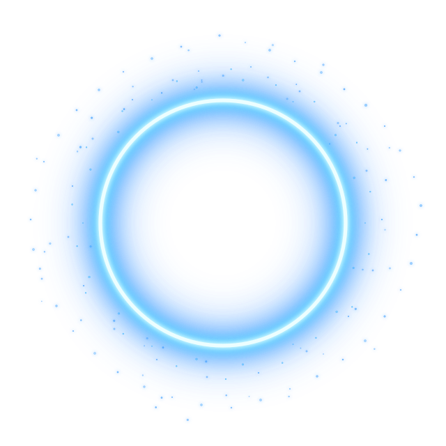

PUBLIC-SECTOR BY DESIGN
Built for bounded institutional use where privacy, authority, provenance and public accountability matter.

One human. Many intelligences. Single voice.™
Governed intelligence for consequential decisions.
Independent AI routes. Preserved dissent. Governed synthesis. Human authority. Verifiable provenance.
Designed for public-sector and institutional environments where the reasoning process, competing views and authority to act matter as much as the final answer.
H.E.R is a provider-neutral human-facing intelligence architecture that coordinates governed multi-route analysis, preserves material dissent, produces a reviewable synthesis with provenance, and keeps consequential decision authority with the human.
Built for bounded institutional use where privacy, authority, provenance and public accountability matter.
H.E.R can be evaluated through narrow, reviewable institutional workflows before any wider deployment decision.
H.E.R preserves route-level provenance, material dissent, synthesis treatment and human disposition for later review.
H.E.R is grounded in the published HER2NI research and protocol lineage, while the current institutional system is evaluated independently.
Consequential disposition remains human.
Route, dissent, synthesis and review evidence can remain inspectable.
No model provider owns the decision process.
Designed for transparent and accountable institutional use.
HOW H.E.R WORKS
H.E.R does not ask one model to impersonate certainty.
It creates a governed encounter in which independently admitted intelligences may produce different analyses before one human-facing synthesis is produced, with material dissent and provenance preserved.
THE H.E.R RING™
The H.E.R Ring™ is the persistent visual identity of H.E.R.
Its state is designed to correspond to governed H.E.R interaction conditions rather than random animation.
EVIDENCE
H.E.R has been exercised against an authenticated Georgian and English public legal-source package using independent analytical routes, preserved material difference, synthesis provenance and human disposition.
RESEARCH & PROTOCOL LINEAGE
H.E.R is the institutional system.
HER2NI Research records the research and protocol lineage from which it developed.
INSTITUTIONAL ENQUIRIES
H.E.R is available for discussion with public-sector, legal, research, assurance and other institutions considering bounded evaluation or pilot work.
research@her2ni.ai Consumer / existing H.E.R surface → her2.ai